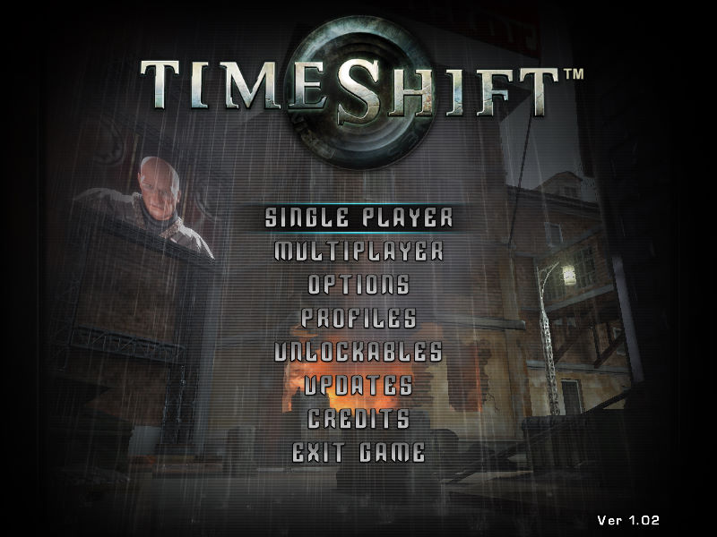
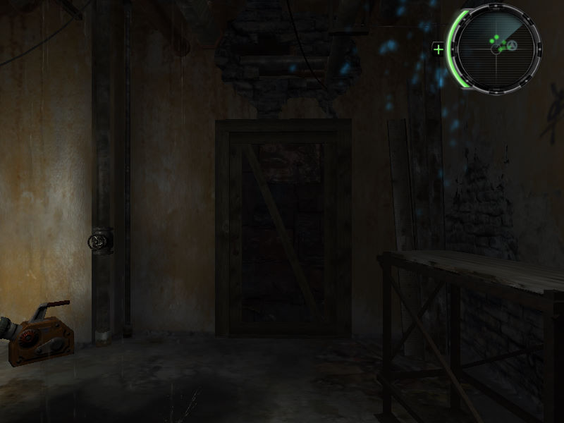

名稱：時空悍將／時空飛梭 (TimeShift，中文／英文版)
簡介：Saber 2007年出品的第一人稱射擊遊戲，由Sierra代理發行，2008年由松崗中文化並
代理發行 [待補]。


保護：光碟SecuROM 7.36+序號（byn9-lab2-nal5-ten2-2583），可使用SRLoader啟動
備註：虛擬機+XP不能執行，請使用Win64實機執行（不可使用dgVoodoo2、DxWnd等工具）。
備註：遊戲不能在8執行緒CPU執行，可使用CPU修正檔修正（限英文版）。
備註：繁中版目前找不到可以執行的方法。
檔案：timeshift_update_ww_10_12.rar = 英文1.2更新檔
nocd12_fix_eng.rar = 英文1.2免光碟檔兼CPU修正檔（繁中版使用後變亂碼）
mini_cht_dvd.rar = 繁中最小檢驗光碟檔